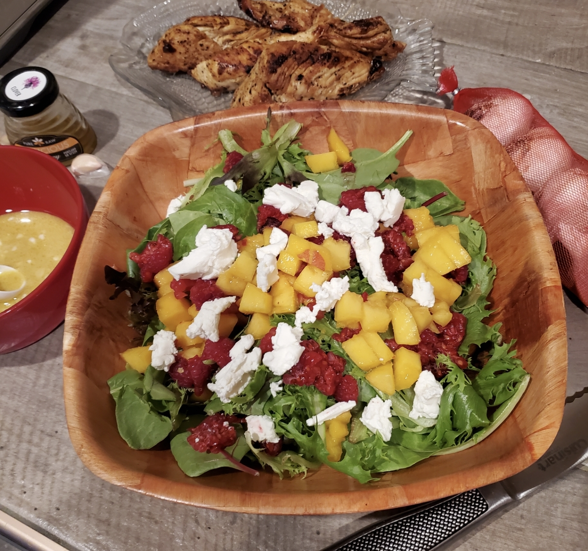

Summer Peach Salad
Ingredients
- 1 large peach, diced
- 3-4 cups of salad greens
- 1 cup of raspberries
- 3 tbsps of goat cheese
- Lemon pepper seasoning
- 4-5 pieces of pan-seared chicken
For the dressing:
- 1/3 cup olive oil
- 2 tbsps dijon mustard
- 2 tbsps lemon juice
- 2 gloves garlic
- 1 tbsp of honey
- salt and pepper to taste
Directions
- Coat chicken with desired amount of lemon pepper seasoning
- Heat 2 tbsps of olive oil over medium-high heat
- Once hot, pan sear the chicken slices on medium-high for 4-5 minutes on each side. Each side should be a golden brown color
- Set chicken aside and let cool for 10 minutes
- In a measuring cup, mix together together the ingredients for the dressing with a fork or whisk
- Place salad greens in a large bowl, and then add the raspberries, peach slices, and goat cheese on top
- Add chicken slices on top, and then drizzle the dressing over salad
- Enjoy!